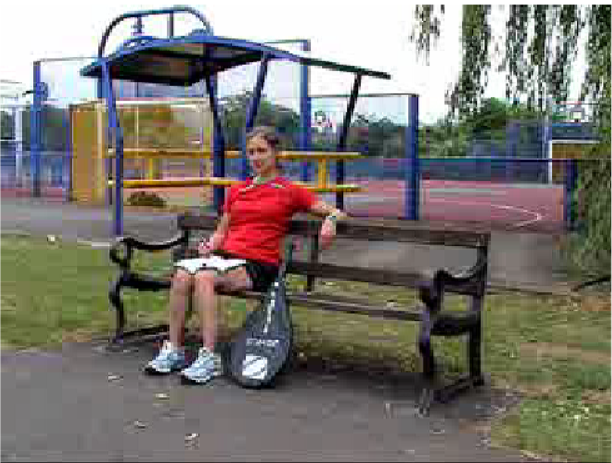

Select a muscle to make the teacher extend at the ankles.

Well done!
Using your voodoo arts, you have gained control of this PE teacher's
body. Press on the correct muscles to bend her to your will! You can
switch between a back and front view of the body.